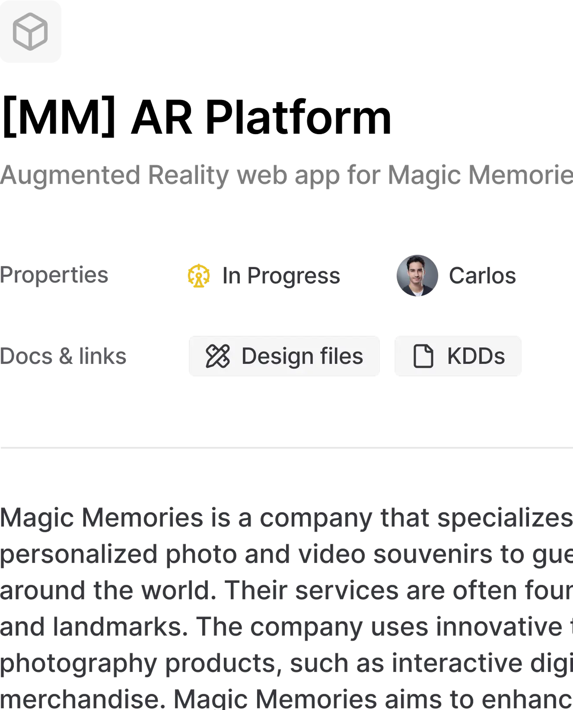
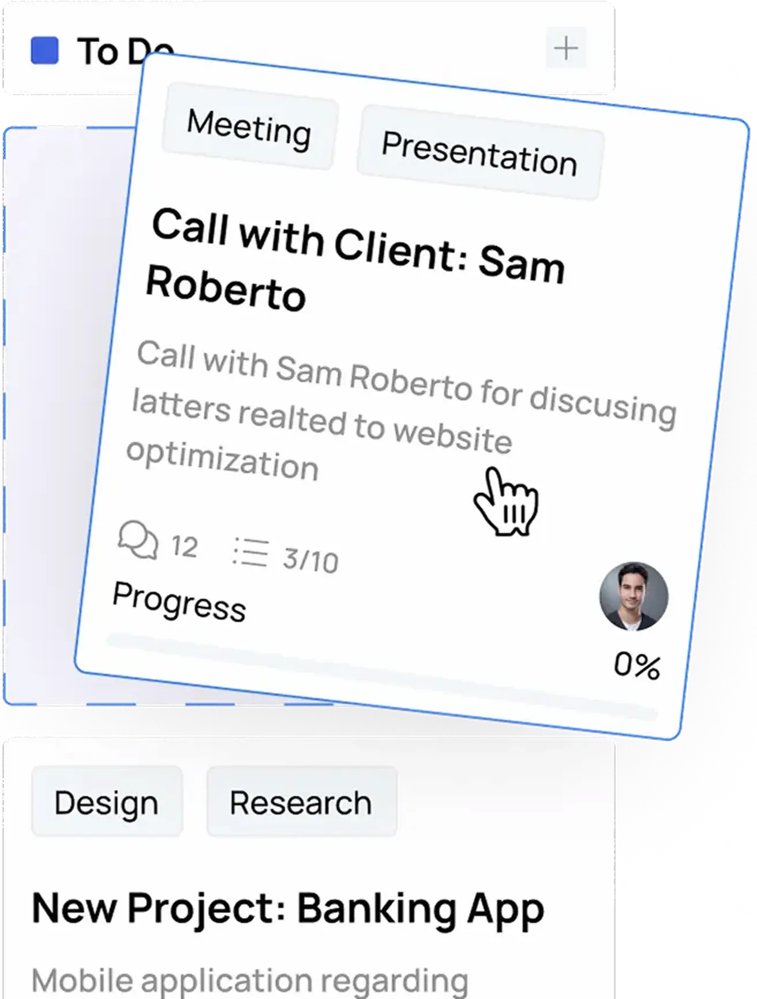
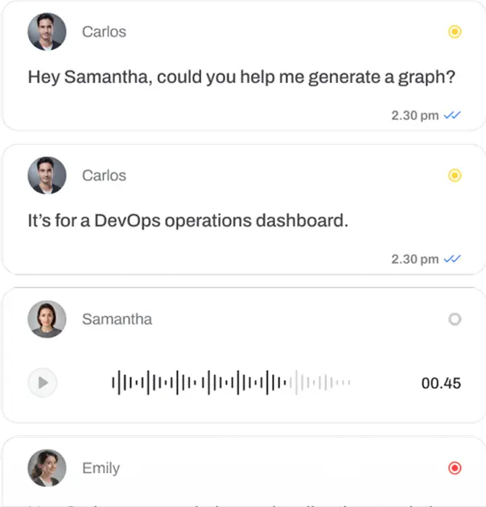
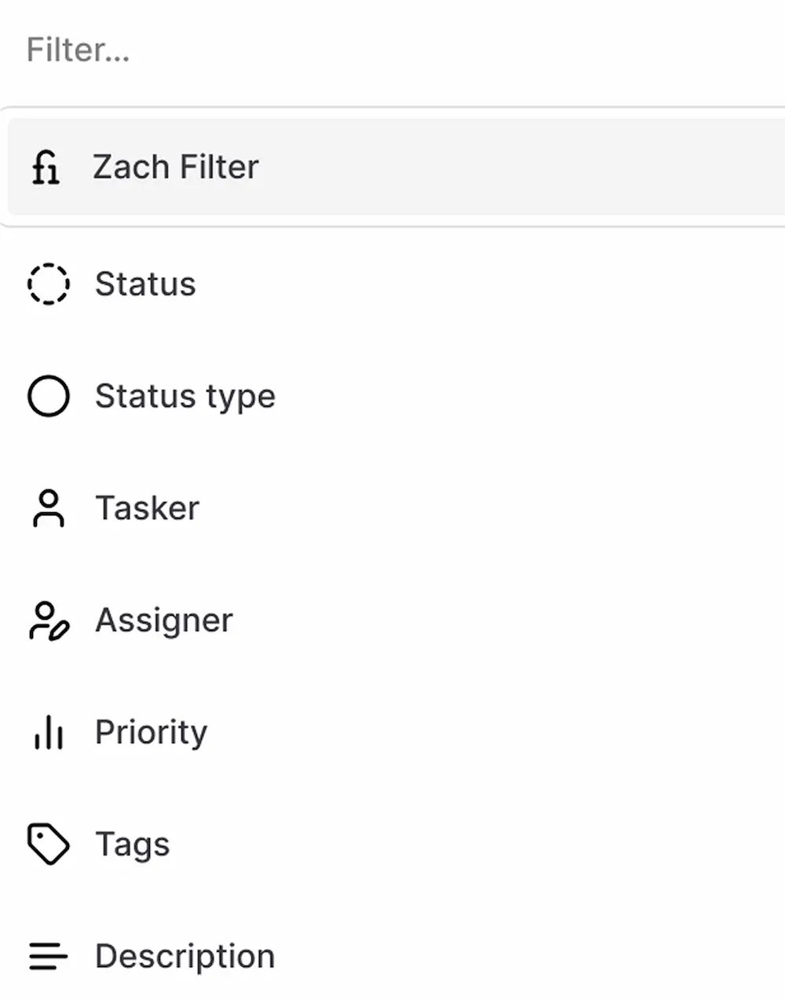
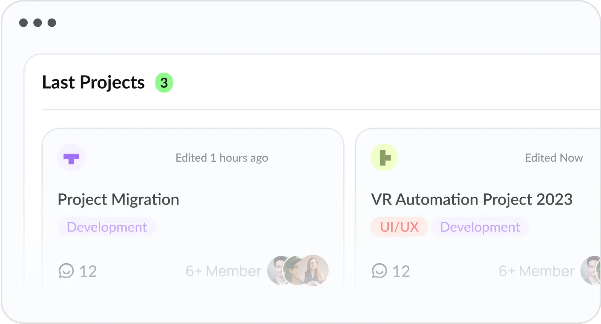
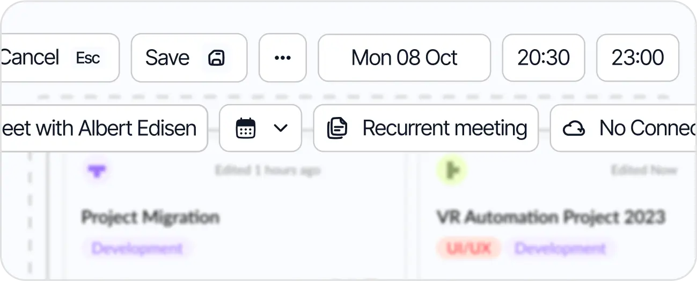
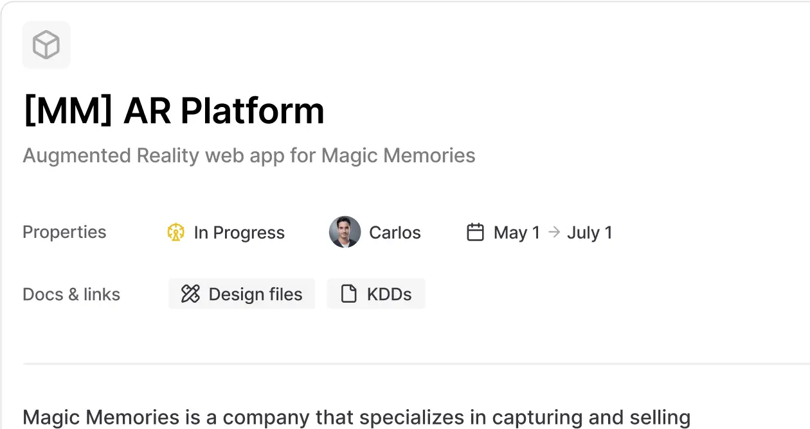
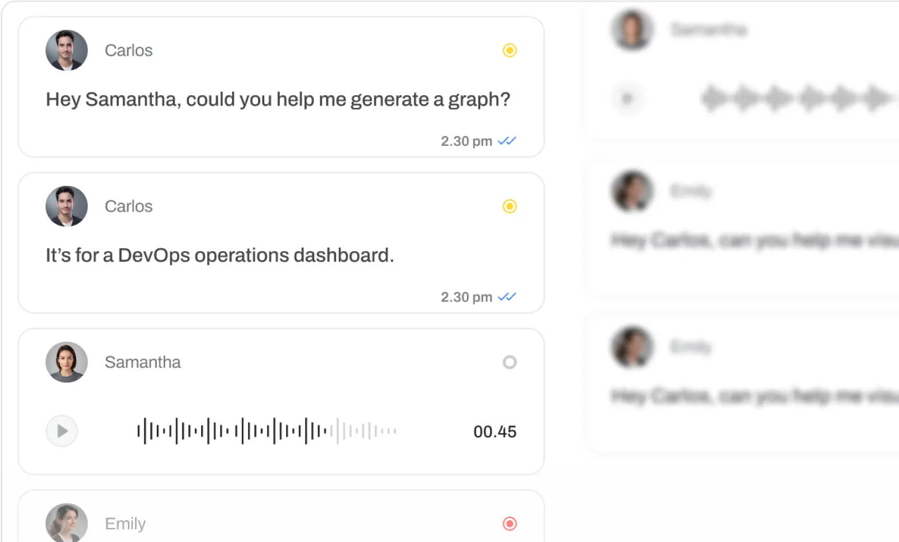

Optimize Your Workflow
Accelerate Your Growth
Simplify project management and boost team productivity with our SaaS platform.

Over 2+ million teams rely on Lumen to collaborate and get work done.


Navigate your work with clarity
A style board that adapts to how your team works.




Feature management that fits your workflow
Assign, prioritize, and monitor every feature with precision. Lumen helps teams ship faster by bringing structure to your development process, without slowing you down.

Organize and prioritize tasks with intelligent automation that adapts to your workflow patterns.

Connect with your team seamlessly through integrated communication and shared workspaces.

Get comprehensive insights into your project performance with detailed analytics and customizable reports.

Visualize project progress and milestones with interactive timeline views and dependency tracking.

Connect with your favorite tools and services to create a unified workflow ecosystem.

Access your projects anywhere with our fully responsive mobile application.
Feature intelligence built for modern product teams
Stay ahead of user needs. Lumen turns your product features into actionable insights, so you can prioritize what matters, streamline delivery, and scale with confidence.
Manage features with clarity, not clutter
Manage features with clarity, not clutter
Say goodbye to messy event logs. Lumen turns real usage data into clear, grouped feature insights, so you can track what matters, not just what happened.

Instant answers to product usage questions
Instant answers to product usage questions
Lumen’s powerful filters make it easy to get actionable usage insights, no SQL needed.

Segment users by feature behavior
Segment users by feature behavior
Slice your audience based on real feature interaction.Find champions, trial users, and at-risk accounts in seconds.

Export insights, tie them to business impact
Export insights, tie them to business impact
Send enriched usage data to your warehouse.Blend Lumen metrics with revenue, churn, or NPS to connect product behavior to outcomes.

Trusted by modern teams
Join thousands of product managers, designers, and developers who rely on Lumen to plan, track, and deliver value without the chaos.
“Lumen has completely changed the way we present our project workflows. We can create visual boards, share tasks instantly, and demo progress live. It’s business-focused collaboration without the overhead.”
“Lumen was the missing layer between our product and engineering teams. We’ve never had this much clarity in how tasks move through the pipeline.”
“We used to lose track of deliverables every week. With Lumen, task ownership is crystal clear and timelines are actually realistic.”
“Lumen blended perfectly into our design-to-dev process. We organize prototypes, handoffs, and sprints without switching tools.”
“Since adopting Lumen, our feedback cycles became shorter and much more effective. It's a must-have for any growing product team.”
“Lumen makes it incredibly easy to manage cross-functional work. We’ve cut coordination time in half and deliver with better insights.”
“We use Lumen across all departments -- from tech to support. Creating shared workflows has drastically improved internal communication.””
“Lumen has completely transformed how we approach daily project planning and execution. Before switching, we constantly missed deadlines due to misalignment. Now, everyone knows what’s happening, who’s responsible, and when things are due. Our productivity skyrocketed, and team communication has never been clearer.”
“I created a workspace, invited my co-founder, and started assigning tasks in 45 seconds. That’s how fast Lumen works.”
Frequently
asked questions:
Still have questions?
Let's talk. Our team is here to help you make the most of Lumen. Whether it's onboarding, integration, or support.
Power your progress with
Pro Access
Save 25% on annual plan
Individual Plan
Popular PlanContact us for Custom CRM Integration
Power Users & Teams
Connect us for Custom CRM Integration